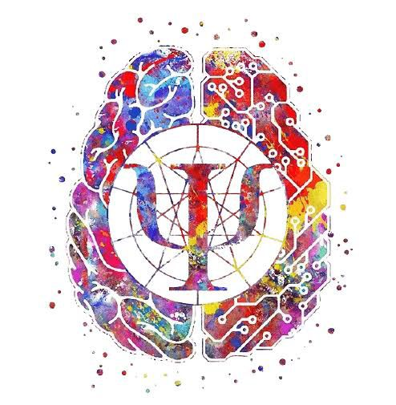

"O principal objetivo da terapia não é transportar o paciente para um impossível estado de felicidade, mas sim ajudá-lo a adquirir firmeza e paciência diante do sofrimento. A vida acontece num equilíbrio entre a alegria e a dor. Quem não se arrisca para além da realidade jamais encontrará a verdade."
- Carl Gustav Jung
Psicologia e psicoterapia online e presencial
Somos um espaço dedicado ao desenvolvimento humano e o fazemos através de um profissional capacitado e dedicado, interligando a evidência científica e a relação humana.
Criamos um modelo de proximidade através do qual acolhemos cada pessoa, sensibilizando para um olhar atento em relação à saúde mental.

Venha se consultar conosco
- Te recebemos de braços abertos em
Endereço: Rua Tenente João Ribeiro, 79, 59296-832,São Gonçalo do Amarante - RNFone: (74) 99281-1244
Email: mororo.psi.2015@gmail.com